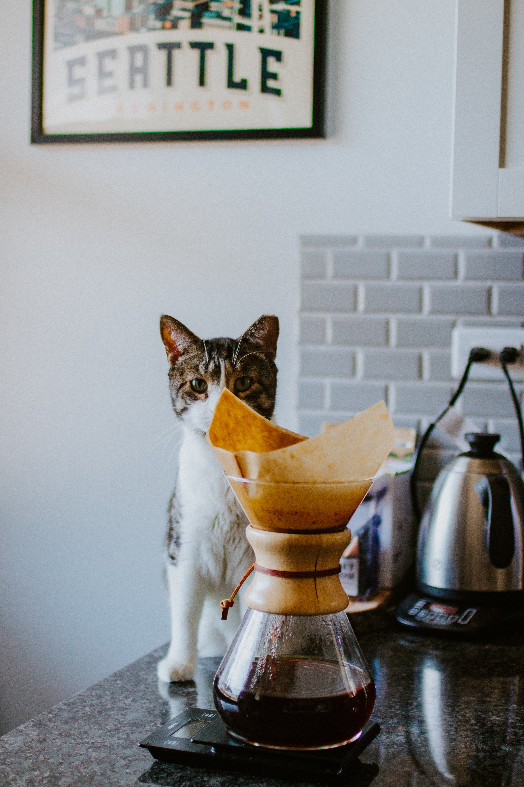

Coffee Club
Coffee lovers coming together every week
Upcoming events
- Café L'Gat - Sep. 15
- CrenchoGord Coffee - Sep. 22
- Dompelier Café - sep 29
Espresso
Concentrated form of coffee served in small, strong shots and is the base for many coffee drinks.
Red Eye
Think of it as an Americano. Except, instead of hot water, you use brewed coffee instead.
Afogatto
Affogato is a dessert made by pouring a shot of espresso over ice cream or gelato. It originated in Italy.

Café L'Gat

CrenchoGord Café

Dompelier Café